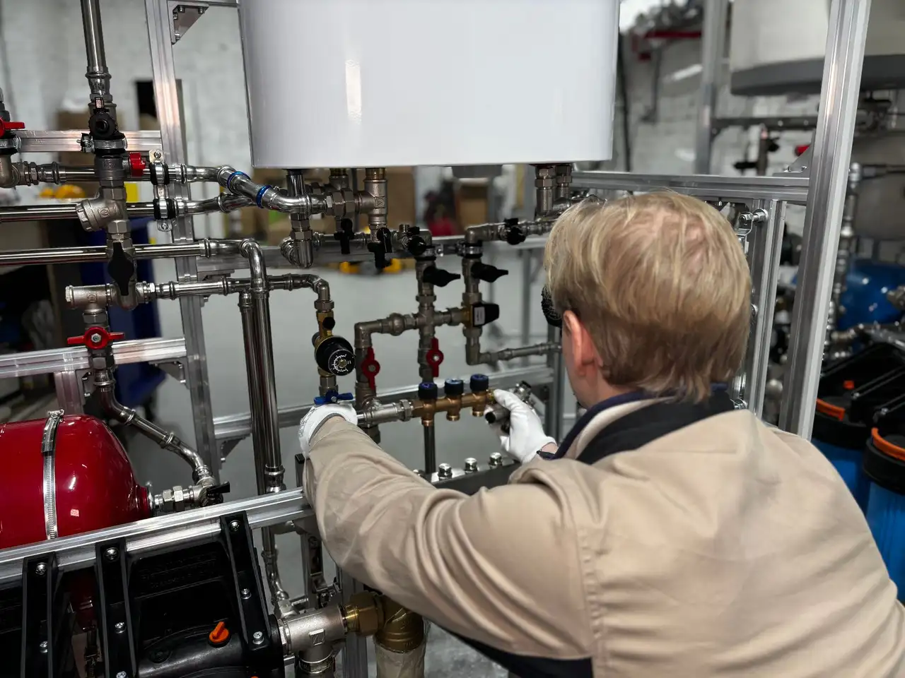

For homes and rentals
Bathroom fixtures take daily wear, and small leaks spread into floors and ceilings. We check the fixture, the valve and the surrounding pipe on every visit.
- Running toilet
- Leaking sink trap
- Slow tub drain
When a toilet runs all night or water pools under the vanity, you need Bathroom Plumbing Services in Arlington Heights that answer the phone and show up. We handle leaking supply lines, clogged drains, running toilets and full remodel rough-ins across Cook County. Our bathroom plumber Arlington Heights homeowners call first brings the right parts, diagnoses the real cause, and leaves your bathroom dry and working.
 Shut-off checkLeak isolationFlush test
Shut-off checkLeak isolationFlush testEvery call includes a diagnosis, a price before work, and a test at the end. What changes is the scope: a fixture repair is not the same visit as a remodel rough-in. Here is what we cover on a standard bathroom plumbing call.

We check the fixture, the shut-off valve, the supply lines and the drain connection. A pressure gauge confirms supply pressure, and we run water long enough to see a slow leak that only shows under load.
Pulling a toilet means a new wax ring, a new set of closet bolts and a check of the flange. We reset the toilet level, shim it if the floor is uneven, and caulk the base so water stays out of the subfloor.
We snake the fixture drain and, if the clog is deeper, run a sewer camera to see what is in the line. Hair, soap scum and paper are common; root intrusion and collapsed pipe are not, and we tell you which one you have.
Old braided supply lines and shut-off valves fail before the fixture does. We replace them with new lines and quarter-turn valves so the next repair starts with a valve that actually closes.
Moving a drain, adding a vent or relocating a shower valve means new pipe sized to code. We set the rough-in at the right height for the finished floor and leave it ready for inspection and tile.
The approach is the same for a home and a business. What changes is the access, the schedule and who needs the paperwork.
Bathroom fixtures take daily wear, and small leaks spread into floors and ceilings. We check the fixture, the valve and the surrounding pipe on every visit.
Restrooms have to stay in service during business hours, so repairs are planned around your schedule. We isolate the problem and confirm the fixture works before we leave.
A plain-language look at what Bathroom Plumbing Services involves and when it is needed.
See how it worksThat means replacing a failed wax ring, cutting out a corroded copper pipe and sweating in new fittings, snaking a slow drain, or swapping a shut-off valve that no longer closes. We test supply pressure with a gauge, check every connection, and confirm the fixture holds before we pack up.
Most calls we run in Arlington Heights come from older homes near the Miner Street Corridor where original galvanized lines have narrowed to a pencil's width, or from remodels where a new vanity needs the drain moved 14 inches. If you have been searching for a bathroom plumber near me Arlington Heights IL and getting voicemail, we answer and book a window. We also handle bathroom remodel plumbing Arlington Heights IL rough-ins so the tile crew never waits on us.
Most bathroom leaks start small and travel, so finding the source matters more than the puddle.

You get a real appointment window, a call when we are on the way, and a technician who walks the bathroom with you before touching a tool. Here is the sequence from first ring to final test.
We ask what the fixture is doing, how long it has been happening, and whether the water is clean or dirty. That five-minute conversation tells us whether to send a drain tech with a drain snake or a service tech with fittings and a wax ring. You get a window, not a vague morning.

The technician checks the fixture, the shut-off valve, the supply lines and the floor around the base. We lay down floor protection before pulling a toilet or opening a cabinet. You hear what we found and what the fix involves before work starts.

A running toilet usually gets a new fill valve and flapper in under an hour. A leaking shower valve may need the cartridge pulled and the seat dressed. If a pipe is cracked, we cut out the bad section and solder copper or crimp PEX tubing, then pressure-test the line.

We run the fixture, watch the joints, and check for weeping at every connection. The toilet gets flushed a half-dozen times. We wipe down the area and haul the old parts out with us, so the only thing left is a working bathroom.

Before we leave, we tell you what to keep an eye on over the next week and what a normal fix looks like. If a supply line was the culprit, we note the age of the others so you can plan ahead instead of getting surprised.

Move across a circle, or focus it and press Enter, for an illustrative thermal view of the photograph.

Breaking loose old fittings and cutting copper cleanly so the new joint sits square. A square cut is the difference between a solder joint that holds and one that weeps.

Clearing hair and soap scum from fixture drains and trap arms. We use the smallest head that clears the clog so we do not scratch the pipe wall.

Scouring the inside of a bathroom branch drain when snaking only opens a channel. It removes the coating that causes repeat clogs.

Seeing what is actually in the line before recommending a repair. We show the footage so you know whether it is roots, scale or a collapsed section.

Isolating a hidden leak and confirming supply pressure. A gauge reading tells us whether the problem is pressure or a failed part.
Thermal views are illustrative, generated from the photographs.
Making the connection the pipe calls for. Copper gets soldered; PEX gets crimped. Using the wrong method on the wrong material is how joints fail.
Drain slope, vent sizing and fixture clearances follow the Illinois Plumbing Code. We size and install to code so the work passes inspection and does not create a trap siphon problem later.
After a repair, we pressurize the line and watch the gauge. A joint that holds pressure cold is a joint that will hold hot. We test before the wall closes.
When a drain backs up more than once, we run a camera before quoting a repair. It prevents selling a snaking when the real problem is a broken pipe under the floor.
Wax rings, supply lines and valve cartridges have a right torque and a right seat. Over-tightening cracks plastic; under-tightening leaks. We follow the manufacturer spec for Moen, Delta and Kohler fixtures.

A toilet in a 1950s Scarsdale home keeps rocking and the floor feels soft near the base.
We pull the toilet, inspect the flange and subfloor, and repair the flange if it is cracked. New closet bolts and a fresh wax ring go in, and we shim the base so it sits solid.
Outcome: The toilet stops moving, the leak path is closed and the soft floor gets identified before it spreads.

A hall bath remodel in the 60004 ZIP needs the sink drain moved for a double vanity.
We cut out the old drain, run new PVC pipe at the correct slope, add a vent if needed and set the rough-in height for the finished cabinet.
Outcome: The rough-in passes inspection and the tile crew starts on schedule instead of waiting on plumbing.

A shower valve in a Downtown Arlington Heights condo will not hold temperature.
We identify the valve brand, pull the cartridge, inspect the seat and replace the cartridge and any worn O-rings. If the valve body is scored, we replace the valve.
Outcome: The shower holds a steady temperature and stops the drip that was staining the tile.

A bathroom sink in a Westgate rental drips into the cabinet below.
We check the trap, supply lines and shut-off valves, replace the failed part and dry the cabinet. We photograph the repair for the property owner.
Outcome: The leak stops, the cabinet dries out and the owner gets a record of what was replaced.

A Countryside homeowner wakes up to a burst supply line under the bathroom sink.
We shut off the water, replace the failed line and valve, and check the surrounding pipe for corrosion. We test the line under pressure before turning the water back on.
Outcome: Water is back on the same day and the cabinet is dry instead of warped.

Arlington Heights has a mix of housing stock that changes the work from block to block. Older homes near Old Arlington Heights and the Miner Street Corridor often still have galvanized supply lines that have narrowed with scale, so a bathroom sink plumbing Arlington Heights IL call there is as much about restoring flow as fixing a leak.
Newer construction and remodels around Lake Arlington and Arlington Market tend to have PEX tubing and PVC drains, which means the repair is usually a failed cartridge or a clogged trap arm. Winter is the season that drives emergency calls: a supply line in an exterior wall can freeze when the temperature drops below zero, and a pipe that cracks on a Thursday night can flood a bathroom before morning.
We check exterior-wall plumbing during cold snaps and tell homeowners which lines are at risk. Cook County requires permits for fixture relocation and new drain work, so a remodel rough-in gets inspected before tile. If you need a bathroom leak repair Arlington Heights IL call handled without opening three walls, we isolate the leak first and cut one access point.

Before: A hall bath toilet rocked on a soft floor and the ceiling below showed a brown ring. The wax ring had failed and the flange was cracked in two places.
After: We replaced the flange, set a new wax ring and closet bolts, and shimmed the base. The toilet flushed clean a dozen times with no movement and no stain spread.
Check the base for caulk gaps twice a year and fix a rocking toilet before the wax ring fails again.
Before: A single-sink bath was being remodeled to a double vanity, and the old drain was in the wrong place for the new cabinet. The wall was open but the rough-in was not started.
After: We cut out the old drain, ran new PVC at the correct slope, added a vent and set the rough-in height for the finished floor. The inspector passed it and tile started the next day.
Keep the cabinet dry and check under the sinks for weeping joints after the first month of use.
Before: A condo shower valve would not hold temperature and dripped constantly, staining the tile below the handle. The cartridge was seized in the valve body.
After: We pulled the cartridge, dressed the seat and installed a new cartridge and O-rings. The shower held a steady temperature and the drip stopped.
Run the shower hot for a minute monthly to keep the cartridge moving and reduce scale buildup.
Water damage in a bathroom rarely stays in the bathroom. It travels down the joists and shows up on a ceiling or in a basement. We fix the source and check the surrounding pipe so the next problem does not start where the last one ended.
A tested repair and a dry floor when we leave.
Most bathroom plumbing repair Arlington Heights calls get a same-day slot when you phone before noon. We carry common parts on the truck, so a running toilet or a dripping supply line is usually a one-visit fix instead of a two-trip wait.
We use leak detection equipment and a pressure gauge to isolate whether the water is coming from a supply line, a drain joint or a failed wax ring. That means we cut one hole, not three, and your drywall repair bill stays small.
Moving a toilet or adding a second sink means new drain and vent work that has to pass inspection. We size PVC and ABS pipe correctly, set the flange at the right height for the finished floor, and leave the rough-in ready for tile.
We install Moen, Delta and Kohler faucets and American Standard toilets, and we replace the supply lines and shut-off valves at the same time. New fixtures on old valves are how a small job turns into a flooded floor at 2 a.m.
Clear records you can keep and share.
Images of the repair and test
What was replaced and why
Pressure and flush results noted
What to watch and when
Not every bathroom problem is a repair. Knowing which category your job falls into helps you plan time and budget.
Fixing a failed part on an existing fixture
Swapping a fixture or a pipe section
Moving drains or adding fixtures
A list like this tells people straight away whether you cover their street. Not listed? Call and ask: it only takes a minute.
Based in Arlington Heights and covering the places around it. Pick one for local details.
Emergency calls after hours add a service premium. We quote before we start.
We answer all three, and we will walk you through what we found.
Yes, most bathroom leaks get same-day repair when you call before noon. A dripping supply line, a leaking toilet base or a failed shut-off valve is usually a one-visit fix. A leak inside a wall or under a tile floor takes longer because we isolate it with leak detection equipment first, then open the smallest access point possible.
You need a plumber for any bathroom remodel in Arlington Heights that moves a drain, adds a fixture, or changes supply lines, because that work requires a permit and inspection. Cosmetic changes like a new faucet or toilet do not. If you are relocating a shower valve or adding a second sink, bring us in during framing so the rough-in is right before tile.
Other services from the same team.
A leaking toilet or a shower that will not drain gets worse overnight. Call us and we will give you a real window, a clear price and a repair that gets tested before we leave. Same-day slots are usually open before noon.
Call (224) 643-9856 or email us and we will get back to you fast. Tell us what is going on and we will tell you what it takes to fix it.